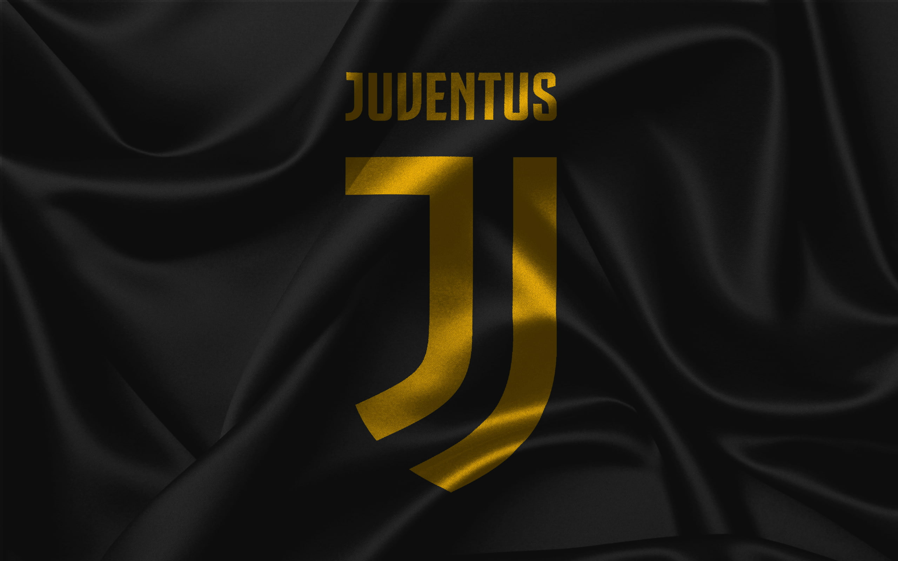

Professional Statistics
Page 1
Sporting Lisbon - 2002 to 2003
| Season | Competition |

|

|
||
|---|---|---|---|---|---|
| 02/03 | Liga Portugal | 25 | 3 | 5 | 1,069' |
| 02/03 | Taça de Portugal | 3 | 2 | - | 172' |
| 02/03 | UEFA Cup | 2 | - | 1 | 119' |
| 02/03 | Champions League Qual. | 1 | - | - | 32' |
| Total: | 31 | 5 | 6 | 1,392' |
Your browser does not support iframes. Watch the video on YouTube.
Page 2
Manchester United - 2003 to 2009

| Season | Competition |
|
|
||
|---|---|---|---|---|---|
| 08/09 | UEFA Champions League | 12 | 4 | 3 | 1,010' |
| 08/09 | Premier League | 33 | 18 | 7 | 2,745' |
| 08/09 | League Cup | 4 | 2 | - | 240' |
| 08/09 | FA Cup | 2 | 1 | 1 | 144' |
| 08/09 | Club World Cup | 2 | 1 | 1 | 180' |
| 07/08 | UEFA Champions League | 11 | 8 | 1 | 1,017' |
| 07/08 | Premier League | 34 | 31 | 7 | 2747' |
| 07/08 | FA Cup | 3 | 3 | - | 270' |
| 07/08 | Community Shield | 1 | - | - | 120' |
| 06/07 | FA Cup | 7 | 3 | 1 | 558' |
| 06/07 | Premier League | 34 | 17 | 8 | 2,788' |
| 06/07 | UEFA Champions League | 11 | 3 | 5 | 951' |
| 06/07 | League Cup | 1 | - | - | 90' |
| 05/06 | Premier League | 33 | 9 | 6 | 2,286' |
| 05/06 | League Cup | 4 | 2 | 1 | 343' |
| 05/06 | FA Cup | 2 | - | - | 121' |
| 05/06 | UEFA Champions League | 6 | - | - | 506' |
| 05/06 | Champions League Qual. | 2 | 1 | 1 | 157' |
| 04/05 | FA Cup | 7 | 4 | 3 | 545' |
| 04/05 | Premier League | 33 | 5 | 4 | 2,425' |
| 04/05 | UEFA Champions League | 7 | - | 2 | 502' |
| 04/05 | League Cup | 2 | - | - | 180' |
| 04/05 | Champions League Qual. | 1 | - | - | 64' |
| 03/04 | FA Cup | 5 | 2 | 3 | 436' |
| 03/04 | Premier League | 29 | 4 | 4 | 1,551' |
| 03/04 | UEFA Champions League | 5 | - | 1 | 291' |
| 03/04 | League Cup | 1 | - | - | 77' |
| Total | 346 | 145 | 64 | 26,586' |
Your browser does not support iframes. Watch the video on YouTube.
From 2021 - 2022
| Season | Competition |
|
|
||
|---|---|---|---|---|---|
| 22/23 | Premier League | 10 | 1 | - | 520' |
| 22/23 | Europa League | 6 | 2 | 2 | 531' |
| 21/22 | Premier League | 30 | 18 | 3 | 2,459' |
| 21/22 | UEFA Champions League | 12 | 4 | 3 | 1,010' |
| 21/22 | FA Cup | 1 | - | - | 120' |
Your browser does not support iframes. Watch the video on YouTube.
Page 3
Real Madrid - 2009 to 2018
| Season | Competition |
|
|
||
|---|---|---|---|---|---|
| 17/18 | UEFA Champions League | 13 | 15 | 3 | 1,170' |
| 17/18 | LaLiga | 27 | 26 | 5 | 2,297' |
| 17/18 | Club World Cup | 2 | 2 | - | 180' |
| 17/18 | Supercopa | 1 | 1 | - | 24' |
| 17/18 | UEFA Super Cup | 1 | - | - | 7' |
| 16/17 | UEFA Champions League | 13 | 12 | 6 | 1,200' |
| 16/17 | LaLiga | 29 | 25 | 6 | 2,544' |
| 16/17 | Copa del Rey | 2 | 1 | - | 180' |
| 16/17 | Club World Cup | 2 | 4 | - | 202' |
| 15/16 | UEFA Champions League | 12 | 16 | 4 | 1,109' |
| 15/16 | LaLiga | 36 | 35 | 11 | 3,184' |
| 14/15 | LaLiga | 35 | 48 | 17 | 3,099' |
| 14/15 | UEFA Champions League | 12 | 10 | 4 | 1,065' |
| 14/15 | Copa del Rey | 2 | 1 | - | 117' |
| 14/15 | Club World Cup | 2 | - | 2 | 180' |
| 14/15 | Supercopa | 2 | - | - | 90' |
| 14/15 | UEFA Super Cup | 1 | 2 | - | 90' |
| 13/14 | UEFA Champions League | 11 | 17 | 5 | 993' |
| 13/14 | LaLiga | 30 | 31 | 11 | 2,540' |
| 13/14 | Copa del Rey | 6 | 3 | 1 | 497' |
| 12/13 | Copa del Rey | 7 | 7 | 1 | 655' |
| 12/13 | LaLiga | 34 | 34 | 11 | 2,717' |
| 12/13 | UEFA Champions League | 12 | 12 | 1 | 1,080' |
| 12/13 | Supercopa | 2 | 2 | - | 180' |
| 11/12 | LaLiga | 38 | 46 | 12 | 3,354' |
| 11/22 | UEFA Champions League | 10 | 10 | 3 | 930' |
| 11/12 | Copa del Rey | 5 | 3 | - | 438' |
| 11/12 | Supercopa | 2 | 1 | - | 180' |
| 10/11 | LaLiga | 34 | 40 | 13 | 2,913' |
| 10/11 | UEFA Champions League | 12 | 6 | 4 | 1,021' |
| 10/11 | Copa del Rey | 8 | 7 | 1 | 684' |
| 09/10 | LaLiga | 29 | 26 | 9 | 2,465' |
| 09/10 | UEFA Champions League | 6 | 7 | 1 | 450' |
| Total | 438 | 450 | 131 | 37,385' |
Your browser does not support iframes. Watch the video on YouTube
Page 4
Juventus - 2018 to 2021

| Season | Competition |
|
|
||
|---|---|---|---|---|---|
| 21/22 | Serie A | - | - | - | 30' |
| 19/20 | Serie A | 33 | 29 | 2 | 2,803' |
| 19/20 | Italy Cup | 4 | 2 | - | 288' |
| 20/21 | UEFA Champions League | 6 | 4 | 2 | 570' |
| 20/21 | Supercoppa Italiana | 1 | 1 | - | 90' |
| 19/20 | UEFA Champions League | 8 | 4 | 1 | 712' |
| 19/20 | Serie A | 33 | 31 | 6 | 2,919' |
| 19/20 | Italy Cup | 4 | 2 | - | 360' |
| 19/20 | Supercoppa Italiana | 1 | - | - | 90' |
| 18/19 | Serie A | 31 | 21 | 9 | 2,689' |
| 18/19 | UEFA Champions League | 9 | 6 | 2 | 749' |
| 18/19 | Italy Cup | 2 | - | - | 118' |
| 18/19 | Supercoppa Italiana | 1 | 1 | - | 90' |
| Total: | 134 | 101 | 22 | 11,508' |
Your browser does not support iframes. Watch the video on YouTube.
Page 5
Al Nassr - 2023-
| Season | Competition |
|
|
||
|---|---|---|---|---|---|
| 24/25 | Saudi Pro League | 24 | 19 | 3 | 2,085' |
| 24/25 | AFC Champions League Elite | 6 | 7 | - | 504' |
| 24/25 | King's Cup | - | - | - | 90' |
| 24/25 | Saudi Super Cup | 2 | 2 | 1 | 171' |
| 23/24 | King's Cup | 4 | 3 | - | 412' |
| 23/24 | Saudi Pro League | 31 | 35 | 11 | 2,648' |
| 23/24 | Saudi Super Cup | 1 | - | - | 86' |
| 23/24 | AFC Champions League | 8 | 6 | 1 | 738' |
| 23/24 | AFC CL-Qualification | 1 | - | 1 | 90' |
| 22/23 | Saudi Pro League | 16 | 14 | 2 | 1,434' |
| 22/23 | King's Cup | 2 | - | - | 177' |
| 22/23 | Saudi Super Cup | 1 | - | - | 90' |
| Total | 97 | 86 | 19 | 8,525' |
Your browser does not support iframes. Watch the video on YouTube.
Page 6
Portugal National Team - 2003-
.jpg)
| Competition |
|
|
||
|---|---|---|---|---|
| International Friendlies/td> | 54 | 22 | 12 | 3,464' |
| World Cup Qualification | 47 | 36 | 14 | 9' |
| European Qualifiers | 44 | 41 | 6 | 3,737' |
| European Championship | 30 | 14 | 8 | 2,641' |
| World Cup | 22 | 8 | 2 | 1,764' |
| UEFA Nations League | 18 | 13 | 3 | 1,475' |
| Confederations Cup | 4 | 2 | 1 | 367' |
| Total: | 219 | 136 | 46 | 17,435' |
Your browser does not support iframes. Watch the video on YouTube.